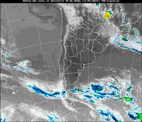
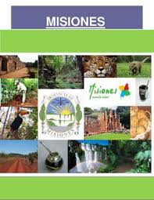

Noticias

Día del Libro
El Día Internacional del Libro es una conmemoración celebrada cada 23 de abril a nivel
mundial con el objetivo de fomentar la lectura, la industria editorial y la protección
de la propiedad intelectual por medio del derecho de autor. Desde 1988, es una celebración
internacional promovida por la UNESCO.
Deportes

Copa Sudamericana
La Dirección de Competiciones y Operaciones de la CONMEBOL informó sobre un cambio de escenario en el encuentro entre Sportivo Luqueño (PAR) vs. Godoy Cruz (ARG), por la Fase de Grupos de la CONMEBOL Sudamericana 2025.
Clima

Pronóstico semanal
Parcialmente nublado con descenso de la temperatura, vientos moderados del sector sur rotando al noreste. Zonda en precordillera. Precipitaciones en las primeras horas afectando principalmente el este y sudeste provincial. Nevadas en cordillera. Máxima: 21ºC Mínima: 12ºC
Cultura

La Cultura Misionera
La provincia de Misiones, en Argentina, se caracteriza por una rica cultura y tradiciones, resultado de la mezcla entre la cultura guaraní, la influencia de inmigrantes y la impronta de las misiones jesuíticas. La cultura misionera se expresa en fiestas populares, música folklórica, gastronomía típica y expresiones artísticas.
Protección del medio ambiente

¿Cómo cuidarlo?
La protección del medio ambiente es la práctica de proteger el medio ambiente natural por parte de individuos, organizaciones y gobiernos. Sus objetivos son conservar los recursos naturales y el entorno natural existente y, cuando sea posible, reparar los daños y revertir las tendencias.